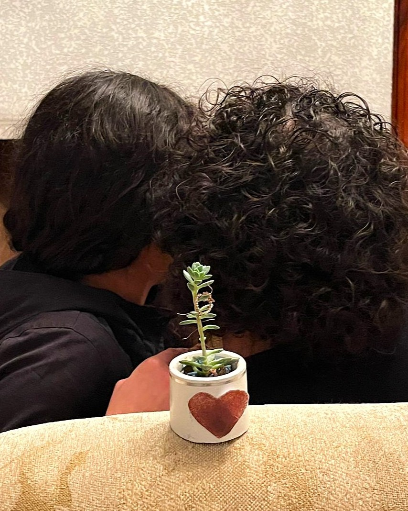
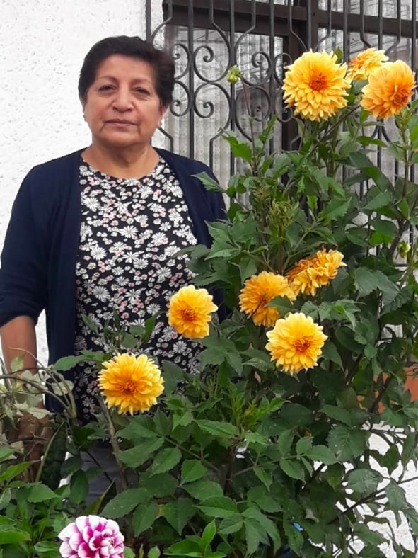
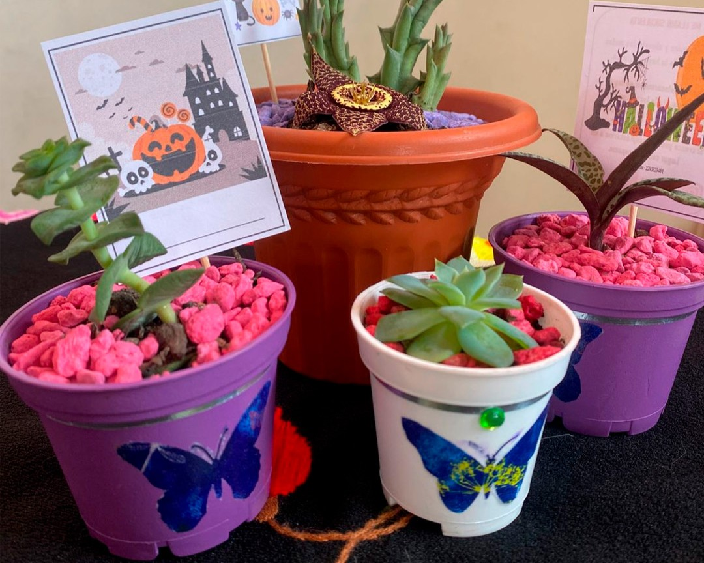

Información
Origen:
Mariany’s Garden es un negocio dedicado a la venta de plantas suculentas, con un enfoque único en macetas personalizadas. Fundado en 2020 por “Doña Mariani”, una jardinera y agricultora con 60 años de experiencia, la cual creó un pequeño negocio con el objetivo de dar a conocer sus productos ornamentales, además de abordar la “crisis de la mediana edad”.
Este proceso se lo puede describir como un período de transición emocional, y existencial que muchos adultos experimentan alrededor de los 40-60 años, caracterizado por sentimientos de insatisfacción, ansiedad y búsqueda de propósito (Erikson, 1950). A través de sus productos, Mariany’s Garden combina la belleza de las plantas suculentas con elementos y diseños atractivos en sus macetas para promover el bienestar mental y emocional en adultos mayores.


Practicas:
La horticultura terapéutica ha demostrado mejorar la salud mental en adultos mayores, reduciendo síntomas de depresión y ansiedad. Un estudio en el Journal of Therapeutic Horticulture encontró que el cuidado de plantas aumenta la autoestima y el bienestar emocional en un 25% en participantes de edad avanzada (Kaplan, 1995).

Mariany, también conocida como "Doña Mariany", es una agricultora de 70 años, la cual siempre ha estado para su familia y amigos. Cuando empezó su jubilación, en un principio, no tenía un objetivo o algún pasatiempo para pasar el resto de sus días.
No fue hasta que decidió empezar su propio jardín de plantas suculentas a petición de sus nietos. Rápidamente, doña Mariany empezó a desarrollar un aprecio y un gran cariño al cultivar y cuidar nuevos retoños de este tipo de plantas, hasta el punto de difundir un mensaje de amor y pertenencia con la nueva generación, al igual que con las personas que estaban a punto de iniciar esta nueva etapa de su vida.
En la actualidad, doña Mariany sigue cultivando y fabricando macetas decoradas con imágenes pintadas a mano para quienes lo necesiten, con el objetivo de dejar un legado con sus ideales, y que estos vuelvan a florecer.
En Mariany’s Garden, esto se traduce como un motivo más para levantarse de la cama cada mañana; es como tener un pequeño compañero, el cual no solamente sirve para resolver el sentimiento de soledad, sino que les ofrece un propósito en el resto de su vida.
Significado:
Surgió de la idea de cómo las plantas pueden servir como seres de compañía y rehabilitación. Las suculentas no solo son resistentes y fáciles de cuidar, sino que representan resiliencia y crecimiento lento, cualidades que resuenan con las experiencias de vida de los adultos mayores.
Nuestro objetivo principal es mitigar la crisis de la mediana edad, que puede manifestarse como depresión leve o aislamiento social en adultos de 50-70 años. Las plantas suculentas, permiten experimentar logros pequeños pero significativos, como regar y ver crecer una planta, lo que fomenta un sentido de control y propósito.

En conclusión: si estás buscando algún obsequio para alguien especial o no encuentras la manera de demostrar todo el cariño que le tengas, no dudes y actúa de inmediato; la vida es corta y no hace falta un pretexto para decirle a alguien lo mucho que lo quieres. Eso es lo que queremos en Mariany's Garden para ti y los demás.